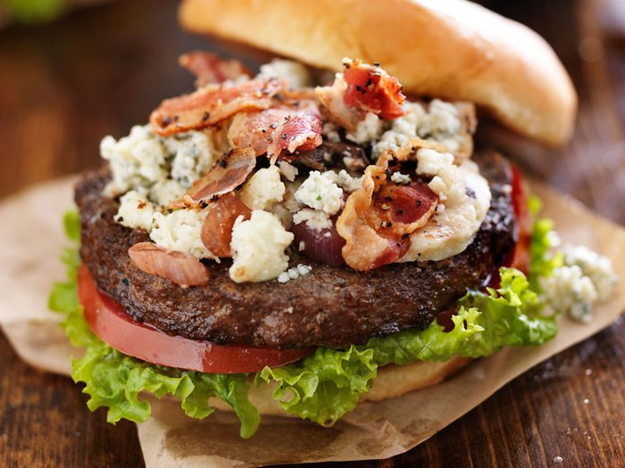

Shallot and Gorgonzola Burger

The Gorgonzola smash burger is a flavor explosion that tantalizes the taste buds with a carefully crafted blend of ingredients. The patty, expertly crafted with a mixture of white onion, shallots, rosemary, and garlic, boasts a delightful medley of aromatic flavors. The seasoning, a harmonious combination of brown sugar, onion powder, and garlic powder, imparts a rich depth to the meat, enhancing its succulence. The burger's texture is a testament to the art of smash burgers, with a crispy exterior giving way to a juicy and tender interior. Topped with a generous heap of shredded lettuce and tangy pickles, each bite is a symphony of textures and tastes. The creamy and piquant Gorgonzola adds the final touch, elevating the burger to a gourmet experience that lingers on the palate.